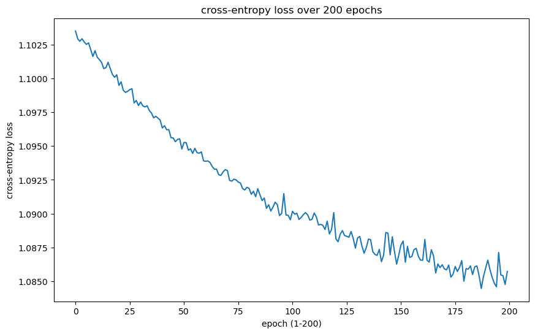

from torch import nn, optim, from_numpy
from torch.utils.data import DataLoader, Dataset
from sklearn.datasets import load_wine
from sklearn.model_selection import train_test_split
import matplotlib.pyplot as plt
import seaborn as sns- Reading in dataset – in this example, a built-in dataset was used
#read in data
wine = load_wine()
X = from_numpy(wine.data).float()
y = from_numpy(wine.target).long()- Split into test and train (note: may want to split into test, train, eval for more complex NNs)
xtrain, xtest, ytrain, ytest = train_test_split(X, y, test_size = 0.2, random_state=2023)- Instantiating a custom dataset class
#dataset class
class WineDataset(Dataset):
def __init__(self, x, y):
self.n_samples = x.shape[0] # len(y)
self.x = x
self.y = y
def __getitem__(self, index):
return self.x[index], self.y[index]
def __len__(self):
return self.n_samples- Create test, train dataset objects and dataloader objects (this makes dividing it into batches easier)
train_data = WineDataset(xtrain, ytrain)
test_data = WineDataset(xtest, ytest)train_loader = DataLoader(train_data, batch_size=8, shuffle=True)
test_loader = DataLoader(test_data, batch_size=8, shuffle=True)- Create NN class+define its structure – method 1 (predetermined # hidden layers). This example uses ReLU as activation fn, sigmoid as fn applied to output layer since the target variable is categorical
class WineNN(nn.Module):
def __init__(self, nf, hL1, hL2, hL3, nO):
super().__init__()
self.hL1 = nn.Linear(nf, hL1)
self.hL2 = nn.Linear(hL1, hL2)
self.hL3 = nn.Linear(hL2, hL3)
self.oL = nn.Linear(hL2, nO)
self.relu = nn.ReLU()
self.sigmoid = nn.Sigmoid()
def forward(self, x):
out = self.hL1(x)
out = self.relu(out)
out = self.hL2(out)
out = self.relu(out)
out = self.hL3(out)
out = self.relu(out)
out = self.oL(out)
y = self.sigmoid(out)
return ymethod 2 (easily adjust # nodes per layer without having to worry about different # hidden layers each time)
class FlexNet(nn.Module):
def __init__(self, n_in, hidden_layers, n_out):
super().__init__()
self.input_layer = nn.Linear(n_in, hidden_layers[0])
self.hidden_layers = nn.ModuleDict(
{f"hl{i}":nn.Linear(hidden_layers[i], hidden_layers[i+1]) for i in range(len(hidden_layers)-1)}
)
self.output_layer = nn.Linear(hidden_layers[-1], n_out)
self.relu = nn.ReLU()
self.sigmoid = nn.Sigmoid()
def forward(self, x):
out = self.input_layer(x)
out = self.relu(out)
for name, layer in self.hidden_layers.items():
out = self.relu(layer(out))
out = self.output_layer(out)
y = self.sigmoid(out)
return y- Create your NN object (using the custom class you made)
#method 1
wine_net = WineNN(13, 4, 4, 4, 3)#method 2
flex_net = FlexNet(13, [4, 4, 4], 3)- Define your loss fn (
criterion) and optimizer (SGD, adam, etc.)
#method 1
criterion = nn.CrossEntropyLoss()
optimizer = optim.SGD(wine_net.parameters(), lr=0.01)#method 2
criterion = nn.CrossEntropyLoss()
optimizer = optim.SGD(flex_net.parameters(), lr=0.01)- Specify training hyperparameters+train model (probably using a loop); track loss over epochs
#method 1
n_epochs = 200
batch_loss = 0
epoch_loss = []
for epoch in range(n_epochs):
batch_loss = 0
#each iteration = a single batch
for batch, (inputs, labels) in enumerate(train_loader):
optimizer.zero_grad()
#forward pass
output = wine_net(inputs)
#get loss
loss = criterion(output, labels)
#grad
loss.backward()
optimizer.step()
#print(f"iteration {i}: loss {loss}")
batch_loss += loss.item()
#take average
epoch_loss.append(batch_loss/(batch+1))
print(f"epoch {epoch}: loss {batch_loss/(batch+1)}")epoch 0: loss 1.1035196118884616
epoch 1: loss 1.1029477251900568
epoch 2: loss 1.1027646130985684
epoch 3: loss 1.1029533280266657
epoch 4: loss 1.10271065764957
epoch 5: loss 1.1025322212113275
epoch 6: loss 1.1026486886872187
epoch 7: loss 1.1021430558628507
epoch 8: loss 1.1016399595472548
epoch 9: loss 1.1020683579974704
epoch 10: loss 1.1015860239664714
epoch 11: loss 1.1014065543810527
epoch 12: loss 1.1012010044521756
epoch 13: loss 1.1007436513900757
epoch 14: loss 1.100804540846083
epoch 15: loss 1.1012108325958252
epoch 16: loss 1.1007501019371881
epoch 17: loss 1.1003097825580173
epoch 18: loss 1.1000993847846985
epoch 19: loss 1.100281794865926
epoch 20: loss 1.0994982322057087
epoch 21: loss 1.0997626384099324
epoch 22: loss 1.0991399486859639
epoch 23: loss 1.0989764796362982
epoch 24: loss 1.0990579790539212
epoch 25: loss 1.0991833673583136
epoch 26: loss 1.0992523564232721
epoch 27: loss 1.0981981820530362
epoch 28: loss 1.0983789828088548
epoch 29: loss 1.0980063610606723
epoch 30: loss 1.0982675949732463
epoch 31: loss 1.0979865590731304
epoch 32: loss 1.0979011721081204
epoch 33: loss 1.0979888571633234
epoch 34: loss 1.0976383553610907
epoch 35: loss 1.0974456005626254
epoch 36: loss 1.0970932642618816
epoch 37: loss 1.097204777929518
epoch 38: loss 1.0970725152227614
epoch 39: loss 1.096924172507392
epoch 40: loss 1.0963448153601751
epoch 41: loss 1.0965119865205553
epoch 42: loss 1.0962118440204196
epoch 43: loss 1.096218228340149
epoch 44: loss 1.095618916882409
epoch 45: loss 1.0956075919999018
epoch 46: loss 1.0953219731648762
epoch 47: loss 1.0954916410975986
epoch 48: loss 1.0955353710386488
epoch 49: loss 1.0947879950205486
epoch 50: loss 1.0952717529402838
epoch 51: loss 1.0952551364898682
epoch 52: loss 1.0946998132599726
epoch 53: loss 1.0948020550939772
epoch 54: loss 1.0944616595904033
epoch 55: loss 1.0948318905300565
epoch 56: loss 1.0945119592878554
epoch 57: loss 1.0944747196303473
epoch 58: loss 1.0945683320363362
epoch 59: loss 1.0939074622260199
epoch 60: loss 1.0938756465911865
epoch 61: loss 1.0939034356011286
epoch 62: loss 1.0937815176116095
epoch 63: loss 1.0934905740949843
epoch 64: loss 1.093288282553355
epoch 65: loss 1.0932929317156475
epoch 66: loss 1.0928763416078355
epoch 67: loss 1.092831916279263
epoch 68: loss 1.0930862228075664
epoch 69: loss 1.093257983525594
epoch 70: loss 1.0931887361738417
epoch 71: loss 1.0924624866909451
epoch 72: loss 1.092402868800693
epoch 73: loss 1.0925499664412603
epoch 74: loss 1.0924988389015198
epoch 75: loss 1.0923377010557387
epoch 76: loss 1.0922627051671345
epoch 77: loss 1.0918546120325725
epoch 78: loss 1.091749178038703
epoch 79: loss 1.0919462905989752
epoch 80: loss 1.0918671356307135
epoch 81: loss 1.091435240374671
epoch 82: loss 1.0916556980874803
epoch 83: loss 1.0912510951360066
epoch 84: loss 1.0918470819791157
epoch 85: loss 1.091390483909183
epoch 86: loss 1.0909644299083285
epoch 87: loss 1.0911520918210347
epoch 88: loss 1.090389092763265
epoch 89: loss 1.0906575785742865
epoch 90: loss 1.0901929206318326
epoch 91: loss 1.0904839436213176
epoch 92: loss 1.0908484326468573
epoch 93: loss 1.0906624926461115
epoch 94: loss 1.089851929081811
epoch 95: loss 1.0900147292349074
epoch 96: loss 1.0914795531166925
epoch 97: loss 1.0898933410644531
epoch 98: loss 1.0898751748932733
epoch 99: loss 1.0895402961307101
epoch 100: loss 1.0901741054322984
epoch 101: loss 1.0899525218539767
epoch 102: loss 1.0900302131970723
epoch 103: loss 1.0895659857326083
epoch 104: loss 1.0897157457139757
epoch 105: loss 1.0899209049012926
epoch 106: loss 1.0900744597117107
epoch 107: loss 1.0899023811022441
epoch 108: loss 1.0895145138104756
epoch 109: loss 1.08957752916548
epoch 110: loss 1.090044829580519
epoch 111: loss 1.0897498660617404
epoch 112: loss 1.0891498393482633
epoch 113: loss 1.0892020397716098
epoch 114: loss 1.089130613538954
epoch 115: loss 1.0888184242778354
epoch 116: loss 1.0894453591770596
epoch 117: loss 1.0884952942530315
epoch 118: loss 1.088833424780104
epoch 119: loss 1.0900741550657485
epoch 120: loss 1.0881368385420904
epoch 121: loss 1.087913499938117
epoch 122: loss 1.088478724161784
epoch 123: loss 1.0887428257200453
epoch 124: loss 1.0883739127053156
epoch 125: loss 1.0883182750807867
epoch 126: loss 1.0882495178116693
epoch 127: loss 1.0886716975106134
epoch 128: loss 1.0881531304783292
epoch 129: loss 1.0874442789289687
epoch 130: loss 1.0881986088222928
epoch 131: loss 1.0883075329992506
epoch 132: loss 1.0875961316956415
epoch 133: loss 1.0870629019207425
epoch 134: loss 1.087472465303209
epoch 135: loss 1.0881112880176969
epoch 136: loss 1.0880680680274963
epoch 137: loss 1.087182018491957
epoch 138: loss 1.0869742300775316
epoch 139: loss 1.0869055456585355
epoch 140: loss 1.087344812022315
epoch 141: loss 1.0864411460028753
epoch 142: loss 1.0869298775990803
epoch 143: loss 1.0886027812957764
epoch 144: loss 1.0885486801465352
epoch 145: loss 1.0869460238350763
epoch 146: loss 1.0882866316371493
epoch 147: loss 1.0871798793474834
epoch 148: loss 1.086258504125807
epoch 149: loss 1.0869462821218703
epoch 150: loss 1.0876785318056743
epoch 151: loss 1.0879658261934917
epoch 152: loss 1.0863981511857774
epoch 153: loss 1.0875712368223402
epoch 154: loss 1.0867549644576178
epoch 155: loss 1.0868221521377563
epoch 156: loss 1.0873284935951233
epoch 157: loss 1.0874247153600056
epoch 158: loss 1.0868449343575373
epoch 159: loss 1.0865531365076702
epoch 160: loss 1.0865427652994792
epoch 161: loss 1.0880825916926067
epoch 162: loss 1.0865484608544245
epoch 163: loss 1.086406581931644
epoch 164: loss 1.0873221423890855
epoch 165: loss 1.0868662463294134
epoch 166: loss 1.0856000317467585
epoch 167: loss 1.086272074116601
epoch 168: loss 1.0859976874457464
epoch 169: loss 1.0862104230456882
epoch 170: loss 1.0859081943829854
epoch 171: loss 1.0858315957917108
epoch 172: loss 1.0861900183889601
epoch 173: loss 1.085291862487793
epoch 174: loss 1.0855152673191495
epoch 175: loss 1.0860816571447585
epoch 176: loss 1.0857138766182794
epoch 177: loss 1.0860220458772447
epoch 178: loss 1.0865194731288486
epoch 179: loss 1.08499194516076
epoch 180: loss 1.085925665166643
epoch 181: loss 1.0858814981248643
epoch 182: loss 1.0861274003982544
epoch 183: loss 1.0854872266451518
epoch 184: loss 1.0860595968034532
epoch 185: loss 1.086121678352356
epoch 186: loss 1.0853958394792345
epoch 187: loss 1.0844525794188182
epoch 188: loss 1.0853349566459656
epoch 189: loss 1.0859438445832994
epoch 190: loss 1.0865548981560602
epoch 191: loss 1.085860616630978
epoch 192: loss 1.0852837430106268
epoch 193: loss 1.0848489006360371
epoch 194: loss 1.0845766796006098
epoch 195: loss 1.087120532989502
epoch 196: loss 1.085456755426195
epoch 197: loss 1.0854012734360166
epoch 198: loss 1.0847520894474454
epoch 199: loss 1.0857134097152286- When still playing around w/ nn structure+determining hyperparameters, you can plot loss over epochs
plt.figure(figsize=(10,6))
sns.lineplot(epoch_loss)
plt.xlabel("epoch (1-200)")
plt.ylabel("cross-entropy loss")
plt.title("cross-entropy loss over 200 epochs")
plt.show()
#method 2
n_epochs = 200
batch_loss = 0
epoch_loss = []
for epoch in range(n_epochs):
batch_loss = 0
#each iteration = a single batch
for batch, (inputs, labels) in enumerate(train_loader):
optimizer.zero_grad()
#forward pass
output = flex_net(inputs)
#get loss
loss = criterion(output, labels)
#grad
loss.backward()
optimizer.step()
#print(f"iteration {i}: loss {loss}")
batch_loss += loss.item()
#take average
epoch_loss.append(batch_loss/(batch+1))
print(f"epoch {epoch}: loss {batch_loss/(batch+1)}")epoch 0: loss 1.0758992003069983
epoch 1: loss 1.0755802591641743
epoch 2: loss 1.0954784154891968
epoch 3: loss 1.086965435081058
epoch 4: loss 1.0983157025443182
epoch 5: loss 1.0788868798149958
epoch 6: loss 1.0852028992440965
epoch 7: loss 1.0833798779381647
epoch 8: loss 1.07219797372818
epoch 9: loss 1.0846776001983218
epoch 10: loss 1.084008405605952
epoch 11: loss 1.069062242905299
epoch 12: loss 1.066004004743364
epoch 13: loss 1.0729810330602858
epoch 14: loss 1.062520855002933
epoch 15: loss 1.0717429882950253
epoch 16: loss 1.0608669420083363
epoch 17: loss 1.0530325108104281
epoch 18: loss 1.0582917498217688
epoch 19: loss 1.048289544052548
epoch 20: loss 1.0456899073388841
epoch 21: loss 1.046246074967914
epoch 22: loss 1.0382493966155582
epoch 23: loss 1.0410330825381808
epoch 24: loss 1.0383899874157376
epoch 25: loss 1.0405794845687018
epoch 26: loss 1.039245198170344
epoch 27: loss 1.0447058611445956
epoch 28: loss 1.040022028817071
epoch 29: loss 1.0385067893399134
epoch 30: loss 1.0346433652771845
epoch 31: loss 1.040452755159802
epoch 32: loss 1.0338236623340182
epoch 33: loss 1.0348394480016496
epoch 34: loss 1.0315190023846097
epoch 35: loss 1.0348602036635082
epoch 36: loss 1.0318101876311832
epoch 37: loss 1.032920668522517
epoch 38: loss 1.0338921116458044
epoch 39: loss 1.030531449450387
epoch 40: loss 1.0345942311816745
epoch 41: loss 1.0321497718493144
epoch 42: loss 1.0284072558085124
epoch 43: loss 1.0314678053061168
epoch 44: loss 1.0307140681478713
epoch 45: loss 1.0294452408949535
epoch 46: loss 1.0238284468650818
epoch 47: loss 1.0285656419065263
epoch 48: loss 1.0301485160986583
epoch 49: loss 1.0278050535255008
epoch 50: loss 1.0291366179784138
epoch 51: loss 1.0294345551066928
epoch 52: loss 1.0284696817398071
epoch 53: loss 1.027887417210473
epoch 54: loss 1.0283823377556272
epoch 55: loss 1.0240179465876684
epoch 56: loss 1.024108562204573
epoch 57: loss 1.0211945639716253
epoch 58: loss 1.018980062670178
epoch 59: loss 1.0265384548240237
epoch 60: loss 1.0181521077950795
epoch 61: loss 1.0233079857296414
epoch 62: loss 1.015581038263109
epoch 63: loss 1.0194327135880787
epoch 64: loss 1.0193254053592682
epoch 65: loss 1.0265762706597645
epoch 66: loss 1.0255666143364377
epoch 67: loss 1.016391204463111
epoch 68: loss 1.0159449544217851
epoch 69: loss 1.0204911364449396
epoch 70: loss 1.010678105884128
epoch 71: loss 1.0153994858264923
epoch 72: loss 1.021962755256229
epoch 73: loss 1.0189153287145827
epoch 74: loss 1.0143067240715027
epoch 75: loss 1.0070891446537442
epoch 76: loss 1.0126522713237338
epoch 77: loss 1.0084776447878943
epoch 78: loss 1.009682810968823
epoch 79: loss 1.0167745351791382
epoch 80: loss 0.9994094901614718
epoch 81: loss 1.002054105202357
epoch 82: loss 1.0176017118824854
epoch 83: loss 1.0072523554166157
epoch 84: loss 0.9928684631983439
epoch 85: loss 1.0101111729939778
epoch 86: loss 1.0118306411637201
epoch 87: loss 0.9833696683247884
epoch 88: loss 0.9966344270441267
epoch 89: loss 1.0149242679278057
epoch 90: loss 1.0054545369413164
epoch 91: loss 1.014212002356847
epoch 92: loss 1.0113542907767825
epoch 93: loss 1.0187519258923001
epoch 94: loss 1.0080854329797957
epoch 95: loss 1.000441633992725
epoch 96: loss 0.992532577779558
epoch 97: loss 1.0097742180029552
epoch 98: loss 0.9927737679746416
epoch 99: loss 1.004389289352629
epoch 100: loss 0.9952792028586069
epoch 101: loss 0.9944166640440623
epoch 102: loss 1.0122214986218347
epoch 103: loss 0.992783334520128
epoch 104: loss 1.0132885873317719
epoch 105: loss 0.9835924241277907
epoch 106: loss 0.999792648686303
epoch 107: loss 0.9840762846999698
epoch 108: loss 0.9854936665958829
epoch 109: loss 0.997794959280226
epoch 110: loss 0.9719465904765658
epoch 111: loss 0.9920585718419817
epoch 112: loss 0.9930699931250678
epoch 113: loss 0.9962947931554582
epoch 114: loss 0.9979508750968509
epoch 115: loss 0.9912625186973147
epoch 116: loss 0.9890427986780802
epoch 117: loss 0.9856837424967024
epoch 118: loss 1.0160565740532346
epoch 119: loss 0.9847754902309842
epoch 120: loss 0.9861320389641656
epoch 121: loss 0.9931310514609019
epoch 122: loss 0.9988126125600603
epoch 123: loss 0.9763712452517616
epoch 124: loss 0.9902465475930108
epoch 125: loss 1.0241407917605505
epoch 126: loss 0.9962930844889747
epoch 127: loss 1.0219404333167605
epoch 128: loss 1.0118498305479686
epoch 129: loss 0.9973408314916823
epoch 130: loss 0.9869284927845001
epoch 131: loss 0.9830329484409757
epoch 132: loss 0.9844811194472842
epoch 133: loss 0.9748289982477824
epoch 134: loss 1.0123606787787542
epoch 135: loss 0.996467391649882
epoch 136: loss 0.9946328202883402
epoch 137: loss 0.9884665409723917
epoch 138: loss 0.991803463962343
epoch 139: loss 1.0036283565892115
epoch 140: loss 0.9830687410301633
epoch 141: loss 0.973314086596171
epoch 142: loss 0.9921116232872009
epoch 143: loss 0.9962259232997894
epoch 144: loss 0.97552090883255
epoch 145: loss 0.9807691077391306
epoch 146: loss 1.0016797681649525
epoch 147: loss 0.9701012406084273
epoch 148: loss 0.9847355352507697
epoch 149: loss 1.0079118112723033
epoch 150: loss 0.984410262770123
epoch 151: loss 0.9768550362851884
epoch 152: loss 0.9925394687387679
epoch 153: loss 0.9934237632486556
epoch 154: loss 0.9948908256159888
epoch 155: loss 0.9798293974664476
epoch 156: loss 0.9869266880883111
epoch 157: loss 0.9657246602906121
epoch 158: loss 0.9862294230196211
epoch 159: loss 0.9670793612798055
epoch 160: loss 0.9546366433302561
epoch 161: loss 1.090085357427597
epoch 162: loss 1.0338688128524356
epoch 163: loss 0.9852095544338226
epoch 164: loss 0.9724307523833381
epoch 165: loss 1.0271649228201971
epoch 166: loss 0.9859315388732486
epoch 167: loss 0.9870808455679152
epoch 168: loss 0.9829074177477095
epoch 169: loss 0.9796078701814016
epoch 170: loss 0.9765292406082153
epoch 171: loss 1.0084395839108362
epoch 172: loss 0.9688159492280748
epoch 173: loss 0.9622737103038363
epoch 174: loss 0.993135627773073
epoch 175: loss 0.9596685965855917
epoch 176: loss 0.9657837715413835
epoch 177: loss 0.9892585906717513
epoch 178: loss 0.9738571345806122
epoch 179: loss 0.9579844971497854
epoch 180: loss 0.9799589150481753
epoch 181: loss 1.0239534444279141
epoch 182: loss 0.9625405404302809
epoch 183: loss 0.9889433185259501
epoch 184: loss 0.9971031745274862
epoch 185: loss 0.984661877155304
epoch 186: loss 0.9411121441258324
epoch 187: loss 0.9926096366511451
epoch 188: loss 0.984059625201755
epoch 189: loss 0.9524499939547645
epoch 190: loss 0.9831621746222178
epoch 191: loss 0.9570663703812493
epoch 192: loss 0.9726736048857371
epoch 193: loss 1.029220524761412
epoch 194: loss 1.0296267171700795
epoch 195: loss 1.0303357011742063
epoch 196: loss 1.015145457453198
epoch 197: loss 1.0043697953224182
epoch 198: loss 0.9973857833279504
epoch 199: loss 0.9982444743315378plt.figure(figsize=(10,6))
sns.lineplot(epoch_loss)
plt.xlabel("epoch (1-200)")
plt.ylabel("cross-entropy loss")
plt.title("cross-entropy loss over 200 epochs")
plt.show()